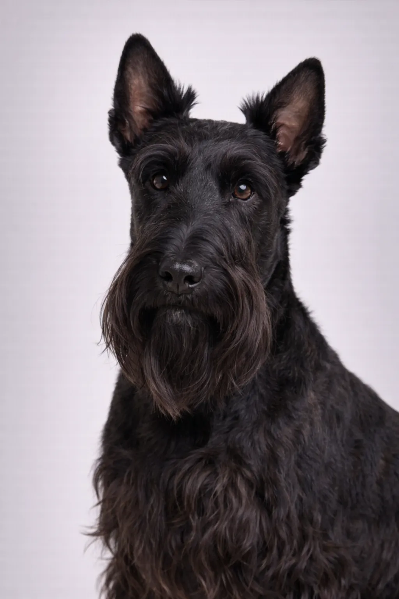

Scottish Terrier
として知られる confident, 独立した, Scottish Terrier 世界中で心を捉えてきました.
10-11 in
18-22 lbs
犬種の評価
性格
概要
The Scottish Terrier is a small but confident terrier with a distinctive silhouette and 独立した spirit.
性格
The Scottish Terrier is known for being confident, 独立した, 元気な. Early socialization helps them develop into well-rounded コンパニオンs.
健康
Generally healthy with a lifespan of 12 年. Common concerns include patellar luxation and dental issues. Regular veterinary checkups and preventive care are important. Maintaining a healthy weight helps prevent many health issues.
運動
Moderate exercise needs with daily walks and regular play sessions. They enjoy a mix of physical activity and relaxation time. Inter活発な games and training sessions provide 精神的刺激. A consistent exercise routine keeps them healthy and 幸せな.
⦿ この犬種はあなたに向いていますか？
✓ こんな方におすすめ
- マンション住まい
- Those wanting a 威厳のある コンパニオン
- Owners who respect independence
- Singles or couples
✗ こんな方には不向き
- Families with young children
- Those wanting an 熱心な-to-please dog
- Multi-dog households
- 初めての飼い主
総合評価: Dignified, 独立した terriers with distinctive looks. Scotties are 忠実な but 頑固な. Perfect for apartments and owners who appreciate their spirit.